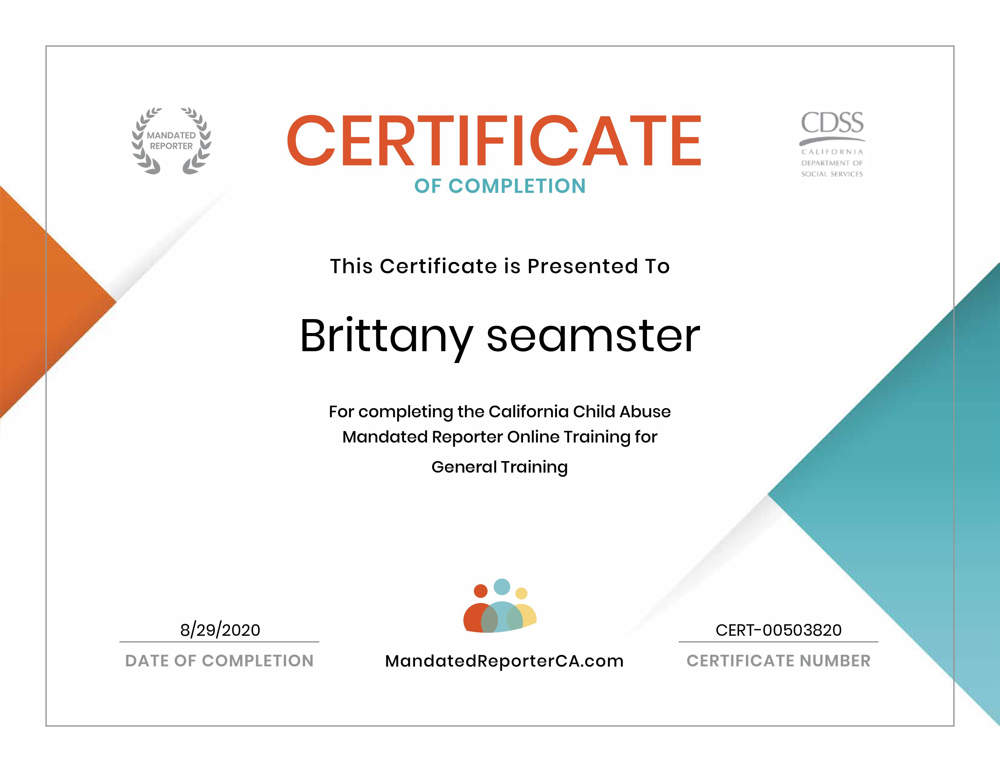

Brittany Seamster
Currently I work as a Behavioral Interventionist at Easterseals.
Behavioral interventionists, sometimes called behavior intervention specialists (BIS) are the commandos of the applied behavior analysis world, parachuting into classrooms to apply their unique skillset to assist with the development and implementation of Behavioral Intervention Plans (BIP) or Individual Education Programs (IEP) for individual students with behavioral issues that are inhibiting their ability to learn and advance with their class. In this job I actively go in home and aid children with autism and perform behavioral therapy.Another job experience that I have held is an Intern Shadowing a docotor. At this particular place of work I would interact and greet the patients and sign then up for their appointments. Moreover, I would call patients to make sure that their insurance was updated and to clarify their appointment dates. Another important aspect of this job was to accompany the main doctor in appointments, where he would perform procedures such as shots and prescribing medicine.
Moreover, at UCR I was the 2020 president of Delta Gamma Fraternity. This job entailed leading a group of 100+ women, over saw 9 executive board positions and was the face of the organization to the UCR community and connected the women to alumni. I would lead meeting every Monday bringing this gorup of women closer together. Another On campus leadership opportunity I have held is being a memeber of BSAV ( Brothers and Sisters Agaisnt Violence). In this group we educated the UCR community on topics such as sexual assualt, relationship violence and rape culture. Every week my team memebers and I would get together to be educated on these topics and after carry the knowledge that we gained from our weekly meeting to break the barriers on campus.
Experience
Teaching Assistant
• Ran sessions to help students learn how to code
• Reviewed and graded student coding projects
• Created educational content to help promote student education
• TA'd for over 400 students each academic quarter
Education
UC Riverside
University of California Riverside
University of California Riverside
Portfolio
